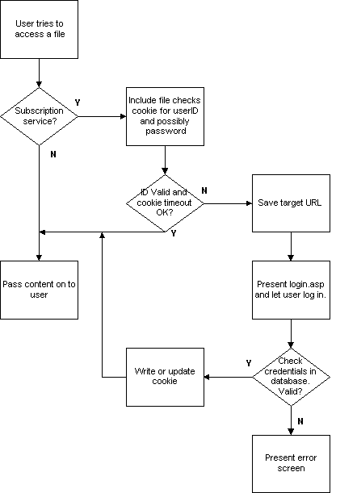

|
| ||
|
| ||
Tom Moran
Microsoft Corporation
June 1, 1998
The following article was originally published in the Site Builder Network Magazine "Servin' It Up" column (now MSDN Online Voices "Servin' It Up" column). A much expanded version of this article, including sample code, was published June 12, 1998 in the Server area of the Workshop.
Barron's magazine called it the "best all-around site for investors on the Web today." Individual Investor wrote, "One of the most elegant, drop-dead gorgeous interfaces on the Net."
I'm talking about
Microsoft Investor  . Every day, 300,000 customers call up over 3.5 million pages with a response time that borders on the immediate. That kind of performance makes Microsoft Investor one of the hottest sites on the Web.
. Every day, 300,000 customers call up over 3.5 million pages with a response time that borders on the immediate. That kind of performance makes Microsoft Investor one of the hottest sites on the Web.
What's that got to do with anything, you ask? "Did Tom work out a deal to get a commission for recruiting new MSI subscribers?" That would be nice, and when all four of my readers have subscribed, that and my 20 percent discount might get me lunch at Denny's - but, alas, the answer is "no." Actually, several readers of this column sent in questions: How do I manage a subscription? How do I get great performance? What technologies should I use to achieve scalability? Do you really use a full cube of butter in each serving of Chicken Kiev? Most of these can be answered by looking at the MSI site. In fact, a couple readers asked specifically about the MSI site.
So I figured I would ask if I could find out a little bit more about the MSI site and how its creators do things. Being the skilled negotiator I am (I went to a seminar last year), I decided initially to ask for everything. I was a little shocked when Eric Zinda, the group Program Manager, agreed to let me publish all the group's secrets. There were so many of them -- and it was such good information for you -- that we've decided to highlight just a few in this column, then go into greater depth in an expanded article in Web Workshop's Server area. Since this was going to be a pretty big job, I asked Dustin Hubbard, one of the star engineers from Microsoft's Premier Developer Support ASP Team, to assist me.
(If you've got plenty of time to hunker down with us, you might prefer to switch to an expanded version of this article.)
Some background: MSI is an online resource for investors who want to track their stocks, maintain their portfolios, keep up-to-date on financial news, and get investing advice from experts. MSI is much like other investing sites on the Internet -- however, there are a few significant exceptions.
First, MSI is broken up into only two sections, subscriber and non-subscriber. Second, MSI provides a way for individuals to easily track all of their investment accounts. Even non-subscribers are provided this powerful functionality. Third, MSI has some of the most powerful investment-research tools available. Finally, MSI has the ability to dynamically chart multiple stocks at once, which provides a powerful way to view the performance trends of your favorite holdings.
Here's a table that summarizes the various technologies used in the site:
| Microsoft Investor Site Technologies | |
| Internet Information Server 3.0 |
As this article was being written, the MSI team was working to upgrade their servers to IIS 4.0. |
| Windows NT Server 4.0, SP3 |
Used as the platform for all servers. |
| ISAPI Filters |
|
| Active Server Pages | Used throughout the site to generate all Web pages |
| Cascading Style Sheets (CSS) | Used to easily maintain a consistent look and feel. Also used to help performance, since CSS is smaller than adding font tags to every cell |
| Word |
Used to write all articles |
| Microsoft Access |
Keeps track of articles and generates article archives |
| Visual Basic for Applications |
A macro which goes through a Word article, generates HTML syntax for each heading and style, and does lookups in the Microsoft Access database for company information. |
| SQL Server 6.5 |
Used to store the user database |
| SSL 2.0 |
Used for secure communication when transmitting credit card information |
| Content Replication System |
Used to deploy new or updated content onto the production servers |
| ActiveX Data Objects |
Used for all interaction with SQL Server, all ADO is directly in ASP pages, and there is no transaction processing. |
| Active Template Library (ATL) | Used to write ISAPI filters, server-side objects, and ActiveX controls that are downloaded to client browser |
| ActiveX Controls | Portfolio Manager, Investment Finder, Charting, Ticker |
| VBScript | Used on server |
| JavaScript | Used on client, primarily for cross-browser compatibility |
| Web Capacity Analysis Tool | Used for testing load of ASP pages on the Web servers |
| Cookies | Holds your username, and, if you select the option, your password. Also used to determine whether your session has timed out. Also stores miscellaneous site settings. |
| Internet Mail Server (IMS) |
Used to send alerts |
| Sendmail object | Used to send your forgotten password |
There are no frames, although there once were. In fact, getting rid of frames was one of the ways the MSI team got major performance improvements between version 4 and the latest, which just debuted. There is no Java and no per-user state. You won't even find html pages. MSI's primary goal has been performance and a great customer experience, and it definitely shows.
MSI has successfully met all of the criteria of a great Web site -- performance, stability, broad reach, scalability. While there are many interesting areas to focus on, for this column I'll talk specifically about the subscription model.
A key part of most large sites is a subscription or membership service. Since the two are so tightly integrated, we'll talk about both subscription and access. MSI uses a fairly straightforward subscription model. The subscription model is a forms based model. Your information, once entered into the MSI form, is picked up by an ISAPI filter, which uses ADO to check a SQL database. What is it checking for? Some pretty simple stuff, really. Is your username a duplicate? If you are signing up as part of a Microsoft Money six-month trial, do you have a valid product ID that hasn't been used before?
I've included a small flowchart so you can quickly get an idea of what is happening.

Let's talk about what happens when you, the user, go to enter your information. You are sent to the following page, https://investor.msn.com/secure/signup/account8.asp  to enter your personal information. All information is encrypted, as you can tell by the qualifier https:. The credit card is actually used to check a SQL Server database, where everything is encrypted, to verify whether you have used that card before to get a free trial. Since the credit-card numbers are all encrypted, not even the Investor team has access. One thing many people appreciate is that their credit card is not even charged during the trial subscription. You are asked to sign up again when your 30 days was up, rather than just automatically having your card charged.
to enter your personal information. All information is encrypted, as you can tell by the qualifier https:. The credit card is actually used to check a SQL Server database, where everything is encrypted, to verify whether you have used that card before to get a free trial. Since the credit-card numbers are all encrypted, not even the Investor team has access. One thing many people appreciate is that their credit card is not even charged during the trial subscription. You are asked to sign up again when your 30 days was up, rather than just automatically having your card charged.
To simplify things (primarily for the customer, but it also has the effect of simplifying coding), the MSI team chose an "all-you-can-eat" model. With this model, you are either a subscriber, or you're not. If you try to access a subscription page, your cookie is checked for a recent successful login. If you haven't logged in, or it's been too long since your last activity, MSI presents you with a login page and lets you know this is a subscription feature. Two files are used to do this. One is an include file, which is included in every subscription page and determines the validity of the user's login. The second is the login.asp file, which collects and validates your information.
Login.inc -- this file is included on every subscription page in MSI and serves to bounce the user to a login page if he or she does not have a valid user ID. An invalid user ID could occur because the user's cookie timed out, the user hasn't logged-in before, or the credit card was denied. MSI uses the ASP object request. servervariables to track where the user wanted to go so that the user is automatically sent to the desired page after successfully logging on.
Login.asp -- - Unless the user has a valid ID, this then leads to the login page, which will ask for the user ID and password. It then validates the ID against the SQL database and, if successful, sends the user on his merry way, updating his cookie so he doesn't have to log in anymore.
It is a fairly simple model. But simple is good. MSI could have chosen to do something much more complicated, something that kept settings-per-user, charged by the quote or service, or even used Windows NT security to validate every user's access permissions. But this would have made it difficult for the user and more difficult to implement. This type of approach also scales well and will work in the future when MSI goes from 50,000 paying subscribers to 500,000. (Note for readers at the Pentagon: Please do not use this type of security model to protect missile-launch codes.)
Go check out Investor if you haven't already, or if it's been awhile. You'll be surprised at the performance and usability of the site, and having it fresh in your mind will probably help you get more out of the article when you read it.
Until next month.
Dustin Hubbard of Microsoft's Premier Internet Developer Support assisted with this article.
Tom Moran is a program manager with Microsoft Developer Support and spends a lot of time hanging out with the MSDN Online Web Workshop folks. Outside of work, he practices kenpo (although sometimes necessary at work), tries out original recipes on his family (Lisa, Aidan, and Sydney), leads white-water trips, or studies tax law (boring, but true).
Did you find this material useful? Gripes? Compliments? Suggestions for other articles? Write us!
© 1999 Microsoft Corporation. All rights reserved. Terms of use.